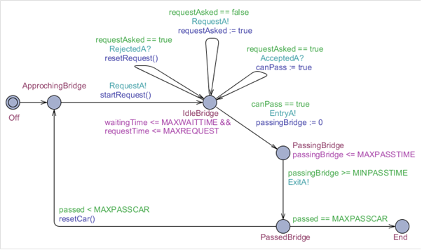

Description générale
Dans cette section, une description générale du projet sera proposé. Deux versions du système y seront décrites avec dans chacune d'elle les états, le code et les vérifications.
Le projet si présent vise à faire la gestion d'un pont à l'aide de véhicules autonomes qui veulent traverser un pont à voie unique. La modélisation de ce système se fera à l'aide d'automates temporisés et une vérification complète du système devra être faite à l'aide de la logique CTL. Voici une image permettant de mieux visualiser le problème et qui est tiré de l'énoncé du laboratoire fait par Sylvie Ratté. Le tout devra être fait avec UPPAAL.
Première partie
Objets
Véhicule A
Premièrement, le véhicule s'approche du pont. Par la suite, il demande au controleur s'il peut passer sur le pont et il le fait jusqu'à ce qu'il obtienne une réponse positive de celui-ci. Ensuite, il passe le pont.
Véhicule B
Premièrement, le véhicule s'approche du pont. Par la suite, il demande au controleur s'il peut passer sur le pont et il le fait jusqu'à ce qu'il obtienne une réponse positive de celui-ci. Ensuite, il passe le pont.

Pont
Il ne fait que maintenir l'état de la direction dans lequel le pont fait face, donc en direction de A ou de B.

Controleur
Celui-ci prends la première requête qu'il recoit et lui envoit un message comme quoi sa requête est accepté. Les requêtes venant de l'autre coté ne seront pas acceptées tant que le pont ne sera pas vide. Une fois la requête accepté le véhicule choisi entre sur le pont. Les requêtes sont ensuite traitées et le véhicule traverse finalement le pont. Alors, le pont devient libre pour permettre à un autre véhicule de traverser et un conteur garde une piste du nombre de véhicule qui ont traversé.

Code
Voici le code utilisé dans les divers objets. On peut facilement remarquer qu'aucune fonction n'a été nécessaire et que tout c'est fait à partir d'états seulement
// Global declarations
chan RequestA, AcceptedA, RejectedA, RequestB, AcceptedB, RejectedB, FreeA, FreeB;
chan EntryA, ExitA, EntryB, ExitB;
// VAA
bool requestAsked := false;
bool canPass := false;
// VAB
bool requestAsked := false;
bool canPass := false;
// Pont
// Controleur
int firstRequest := 0;
int carPassed := 0;
Communication
Voici un diagramme démontrant les communications entre les objets. L'objet Véhicule B a été omis afin d'allégé la lecture du diagramme et, de plus celui-ci est identique à l'objet Véhicule A.

Vérifications
- P1 : Il n’y a pas de collision (i.e. deux véhicules circulants en sens inverse) sur le pont.
- P2 : Un véhicule qui arrive est certain de passer sur le pont à l’issue d’une durée bornée.